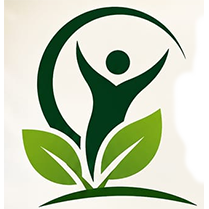
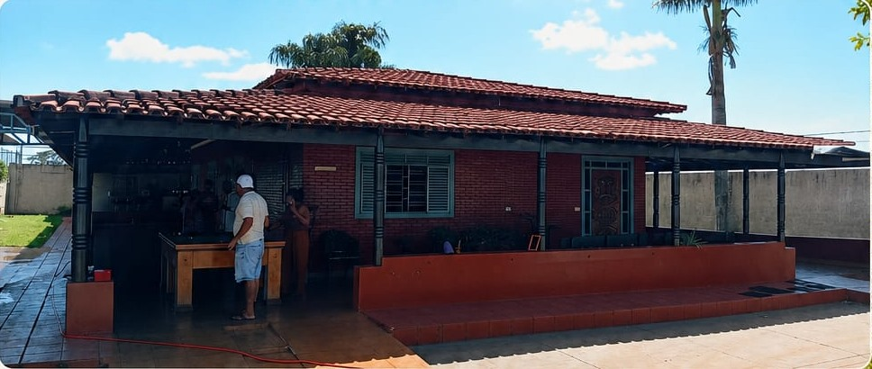
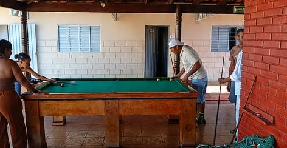
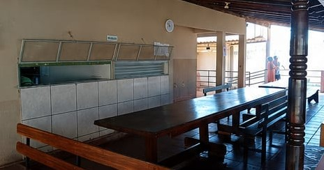

Clínico + terapêutico
Dependência química
Acolhimento para uso abusivo de substâncias, com rotina protegida, avaliação médica e reconstrução de vínculos.

Projeto Vida Clínica de recuperação Fale conosco (64) 98128-8466Acolhimento, respeito e esperança
Restaurando vidas. Reconstruindo histórias. Um novo começo é possível.

Conheça a clínica
A Clínica de Recuperação Projeto Vida oferece tratamento com respeito, empatia e atenção individual para que cada pessoa encontre um caminho possível de recomeço.
A proposta une equipe multidisciplinar, ambiente amplo, contato com a natureza, refeições balanceadas, atividades terapêuticas, sigilo e segurança.
Tratamentos especializados
Cada frente de tratamento foi desenhada para ajudar a família a reconhecer o problema, agir com rapidez e manter continuidade depois do primeiro atendimento.
Acolhimento para uso abusivo de substâncias, com rotina protegida, avaliação médica e reconstrução de vínculos.
Tratamento de uma condição crônica que pede cuidado multiprofissional, participação familiar e prevenção de recaídas.
Suporte para quadros de maior risco, com contenção terapêutica, rotina assistida e acompanhamento próximo.
Cuidado para perda de controle com apostas, jogos digitais e impulsos, trabalhando limites, gatilhos e rotina.
Estratégias para reduzir danos, lidar com abstinência e fortalecer hábitos de saúde no dia a dia.
Indicado para casos que permitem acompanhamento externo, mantendo consultas e suporte terapêutico programado.
Orientação responsável quando houver indicação clínica, com acompanhamento profissional e critérios claros.
Apoio para sofrimento psíquico grave, ideação suicida e transtornos que exigem rede de cuidado consistente.
Sobre internações
A família recebe acolhimento para entender o caso, organizar os próximos passos e buscar um tratamento conduzido com dignidade, sigilo e segurança.
Quando o paciente reconhece a necessidade de ajuda e aceita permanecer em tratamento. É um passo poderoso, especialmente quando a família participa do processo.
Considerada quando há perda importante de controle e risco para o paciente ou terceiros. A família recebe orientação para conduzir a decisão com segurança e respaldo técnico.
Medida judicial para situações específicas, quando alternativas menos restritivas não bastam para preservar vida e segurança. A clínica auxilia com orientação responsável.
Jornada de atendimento
Uma conversa acolhedora para entender a situação e orientar a família no primeiro passo.
A equipe explica possibilidades de cuidado com clareza, respeito e atenção individual.
O paciente encontra ambiente estruturado, refeições balanceadas e atividades terapêuticas.
A recuperação é conduzida com acolhimento, sigilo e esperança para reconstruir histórias.

Acolhimento humanizado
O tratamento acontece em um ambiente pensado para receber pessoas com cuidado, escuta e rotina terapêutica. A proposta é cuidar do corpo, da mente e do espírito com discrição e confiança.
Entre em contato e dê o primeiro passo para uma nova vida.
Profissionais capacitados
A Clínica Projeto Vida reúne profissionais preparados para conduzir o tratamento com atenção, empatia e organização diária.
Ambiente acolhedor
Ambiente amplo, contato com a natureza, refeições balanceadas e áreas de convivência para apoiar a recuperação.

Perguntas frequentes
Se a família precisa de orientação, o WhatsApp da Clínica Projeto Vida ajuda a organizar o primeiro passo.
Dependência química, alcoolismo, crack, cocaína, tabagismo, jogos, tratamento ambulatorial, internações e saúde mental.
O paciente aceita permanecer em tratamento e participa de um plano terapêutico com suporte da família e da equipe.
Quando há risco, perda de controle ou incapacidade momentânea de reconhecer a necessidade de cuidado, sempre com orientação técnica.
A clínica fica na Chácara Estância Bananeira, em Goiatuba - Goiás.
Entre em contato pelo WhatsApp (64) 98128-8466 para receber orientação inicial sobre o tratamento.
Entre em contato
Fale com a Clínica Projeto Vida pelo WhatsApp e receba orientação com acolhimento, respeito e discrição.
Chácara Estância Bananeira, Goiatuba - Goiás.